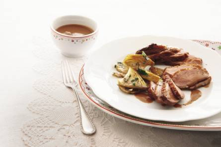

Het wildseizoen in volle gang? Laat je verleiden door dit gerecht. Lekker met haricots verts en gebakken aardappelen.

Ingrediënten (1 persoon)
3/4 eendenborstfilet (ca. 300 g)
100 ml rode port
50 ml vleesfond (pot 380 ml)
1 1/2 takje tijm
1 tl zwarte peperkorrels (potje)
62 1/2 ml slagroom
Bereiding
Laat de eendenborstfilet op kamertemperatuur komen. Kook de port in een steelpan op hoog vuur tot de helft in. Voeg de fond toe en breng aan de kook. Voeg de tijm en de peperkorrels toe en laat nog 15 min. inkoken, zodat de saus dikker wordt. Schenk de slagroom erbij en laat nog 5 min. inkoken.
Maak met een scherp mes sneetjes in het vet van de eendenborst en bestrooi met peper en zout. Verhit een koekenpan en leg het vlees met het vet naar beneden in de pan. Bak 5 min. op laag vuur, keer niet. Giet het vet af en bak het vlees nog 1 min. op hoog vuur zodat het vel goudbruin en knapperig wordt.
Keer om en bak nog 4 min. Schenk de rest van het vet uit de pan. Schenk de portsaus door een zeef in een pan en breng aan de kook. Snijd de eend in plakjes, verdeel over borden schep de saus erover.
Voedingswaarden(per eenpersoonsportie)
energie 675 kcal
eiwit 29 g
koolhydraten 15 g
vet 48 g
waarvan verzadigd 23 g
natrium 250 mg